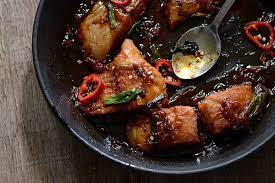

Ca Kho To Recipe

Another dish that just feels like home. Beautiful
and delicious dish that goes well with jasmine
rice. Recipe created by Huy from the Hungry Huy
blog.
Ingredients
- 1 lb catfish filets
- salt to clean the fish
- 2 tbsp oil
- 5 cloves garlic minced
- 1/2 yellow onion sliced
- 1.5 tbsp fish sauce
- About 1/2 teaspoon thick soy sauce
- 1/2 c water
- 1/2 c coconut juice
- 1 chile
- freshly ground black pepper